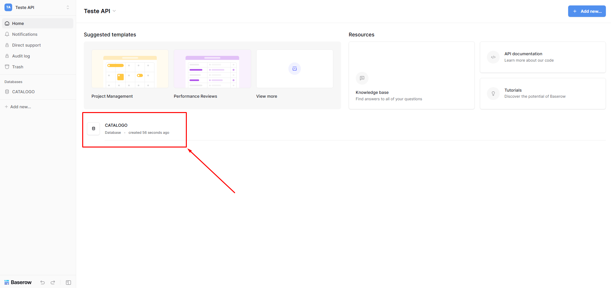
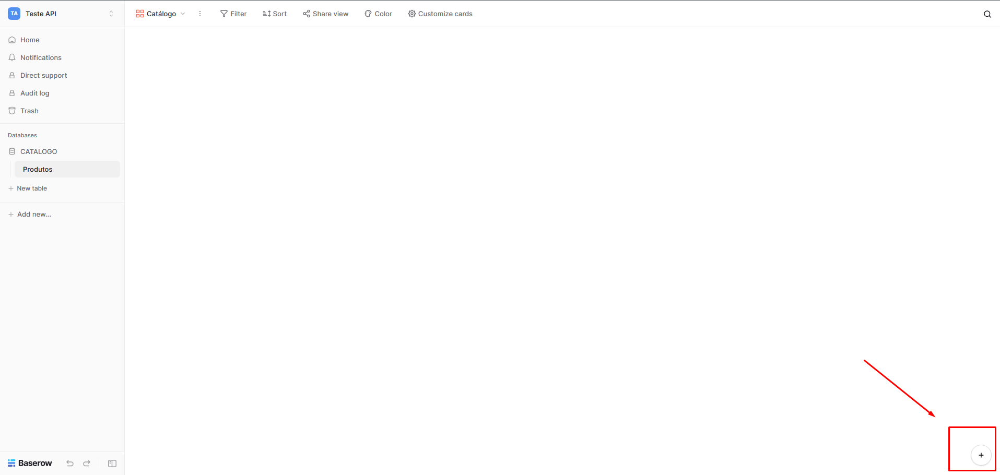
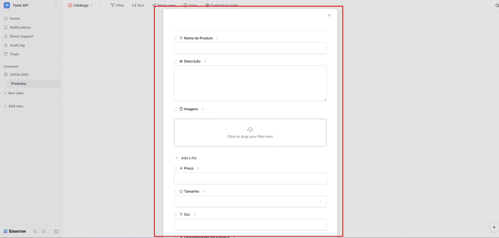
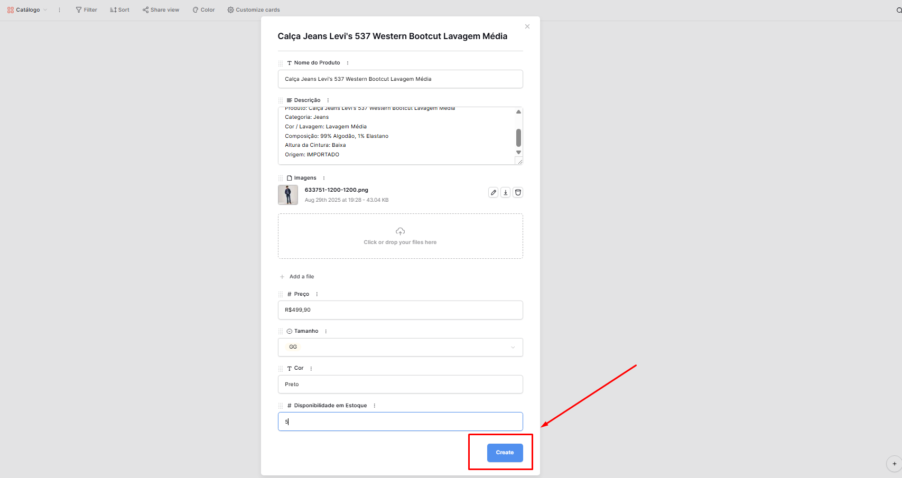
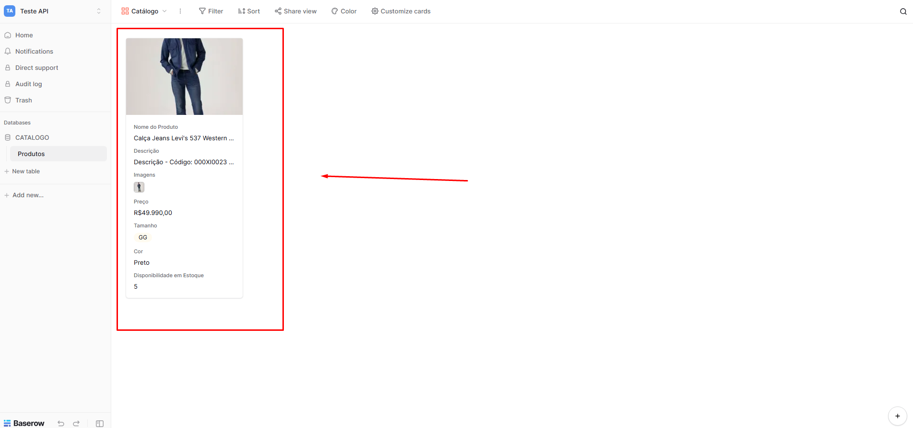

Criar um Produto
O catálogo é a alma do Nexa.
Neste guia, aprenda como adicionar novos produtos ao seu catálogo do Nexa.
Passos para Criar um Produto
Para criar um produto no catálogo do Nexa, siga os passos abaixo:
Passo 1: Clique no botão "CATALOGO"
Ele te levará ao seu catálogo de produtos.
Normalmente, ele fica localizado no meio da página:

Botão "CATALOGO"
Passo 2: Clique no ícone de "+" para adicionar um produto
Ele abrirá a tela de criação de produto.
Este botão fica localizado na parte inferior direita da tela.

Botão "+" para adicionar produto
Passo 3: Preencha os detalhes do produto
Uma nova tela será aberta. Preencha todas as informações necessárias sobre o produto.

Tela de criação do produto
Passo 4: Revise e Salve seu produto
Antes de finalizar, revise todas as informações e clique em "Create", no final da tela.
Tela de produto preenchida
Passo 5: Produto Criado
Pronto! Seu produto está criado dentro do banco de dados do Nexa, e agora ele pode responder automaticamente às perguntas dos clientes.
Catálogo com produto preenchido
💡 Bônus - Dicas para um catálogo bem preenchido:
Para garantir que seus produtos se destaquem, considere as seguintes dicas:
- Fotos de qualidade: Use imagens claras e bem iluminadas.
- Descrições detalhadas: Inclua tamanhos, cores, materiais. Quanto mais detalhes, mais o Nexa pode ajudar na venda.
- Palavras-chave relevantes: Utilize palavras-chave que ajudem o Nexa a encontrar seus produtos na hora do atendimento.
Em seguida, vamos aprender a criar o primeiro produto do seu catálogo